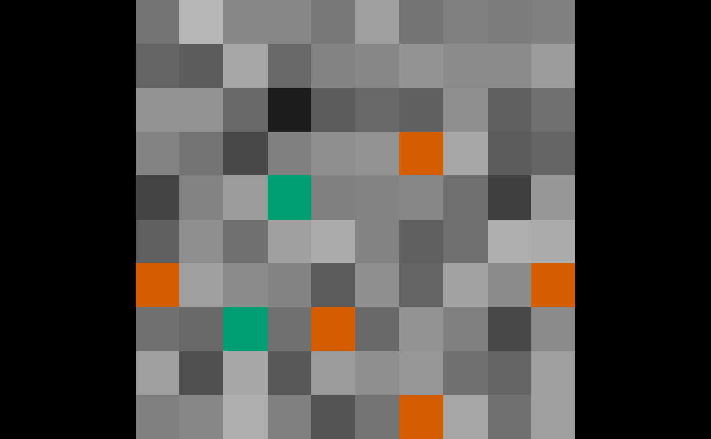
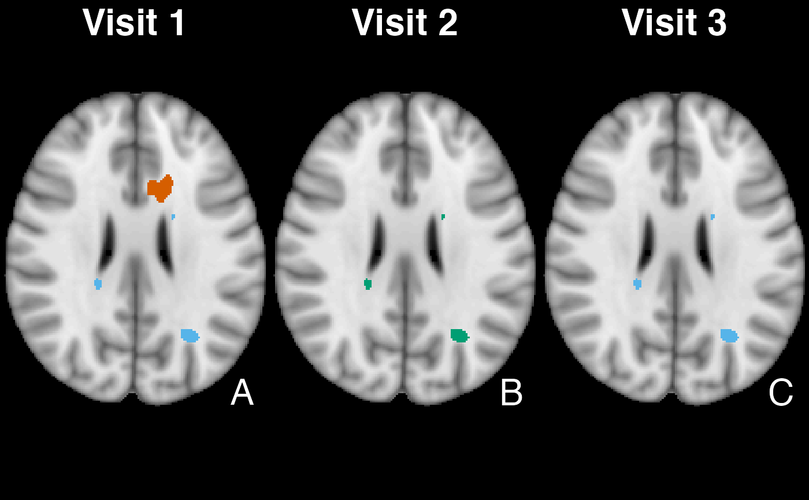

Uses ortho2 to plot differences between a predicted binary
image and the assumed ground truth (roi).
ortho_diff( img, pred, roi, xyz = NULL, cols = c("#56B4E9", "#D55E00", "#009E73"), levels = c("False Negative", "False Positive", "True Positive"), addlegend = TRUE, center = TRUE, leg.cex = 1.5, ... ) multi_overlay_diff( x, pred, roi, z = NULL, cols = c("#56B4E9", "#D55E00", "#009E73"), ... )
Arguments
| img | image to be underlaid |
|---|---|
| pred | binary segmentation (prediction) |
| roi | binary manual segmentation (ground truth) |
| xyz | coordinate for the center of the crosshairs. |
| cols | colors for false negatives/positives |
| levels | labels for false negatives/positives |
| addlegend | add legend, passed to |
| center | run |
| leg.cex | multiplier for legend size |
| ... | arguments to be passed to |
| x | List of images of class |
| z | slice to display |
See also
Examples
set.seed(5) dims = rep(10, 3) arr = array(rpois(prod(dims), lambda = 2), dim = dims) nim = oro.nifti::nifti(arr) roi = nim > 2 pred = nim > 1.5 ortho_diff(nim, pred, roi)set.seed(5) dims = rep(10, 3) arr = array(rnorm(prod(dims)), dim = dims) nim = oro.nifti::nifti(arr) mask = nim > 2 pred = nim > 1.5 multi_overlay_diff(nim, roi = mask, pred = pred)# \donttest{ if (requireNamespace("brainR", quietly = TRUE)) { visits = 1:3 y = paste0("Visit_", visits, ".nii.gz") y = system.file(y, package = "brainR") y = lapply(y, readnii) y = lapply(y, function(r){ pixdim(r) = c(0, rep(1, 3), rep(0, 4)) dropImageDimension(r) }) x = system.file("MNI152_T1_1mm_brain.nii.gz", package = "brainR") x = readnii(x) mask = x > 0 alpha = function(col, alpha = 1) { cols = t(col2rgb(col, alpha = FALSE)/255) rgb(cols, alpha = alpha) } roi = y[[2]] pred = y multi_overlay_diff(x, roi = roi, pred = pred) multi_overlay_diff(x, roi = roi, pred = pred, mask = mask, main = paste0("\n", "Visit ", visits), text = LETTERS[visits], text.x = 0.9, text.y = 0.1, text.cex = 3) }# }